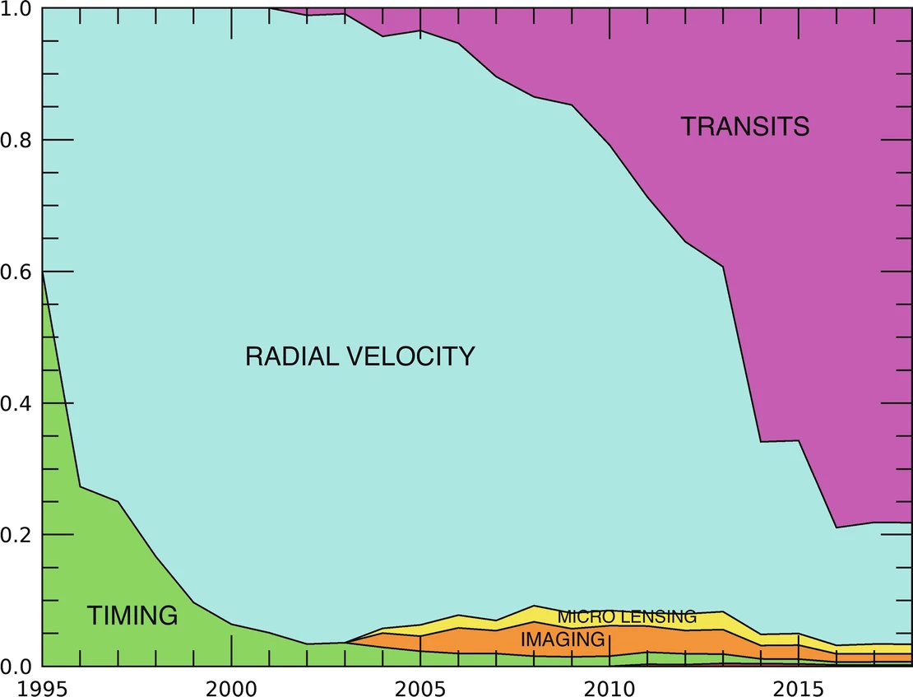
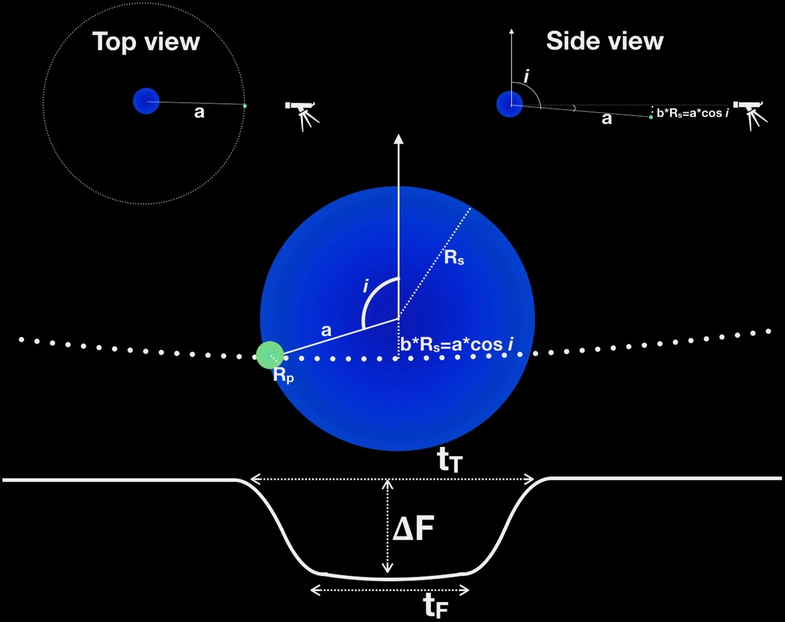
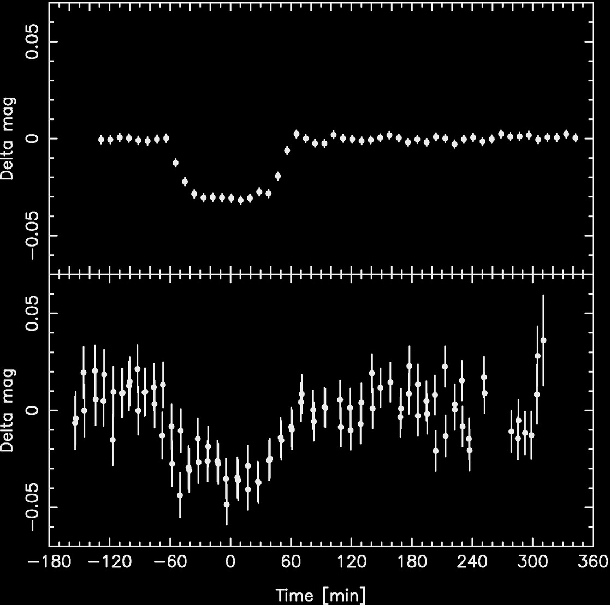
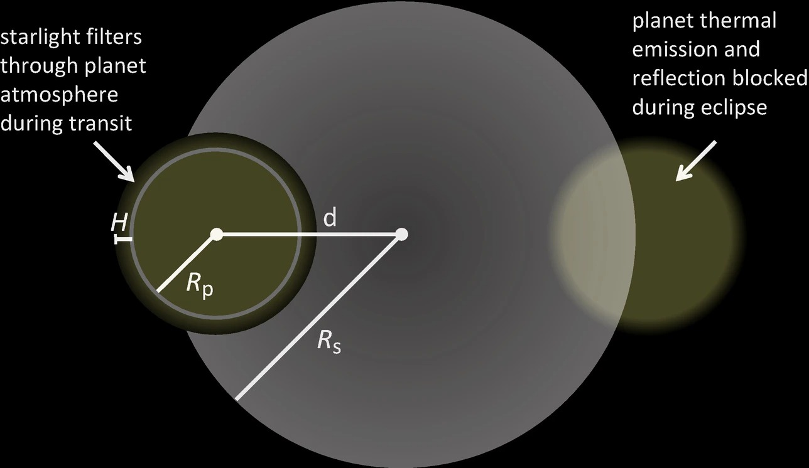
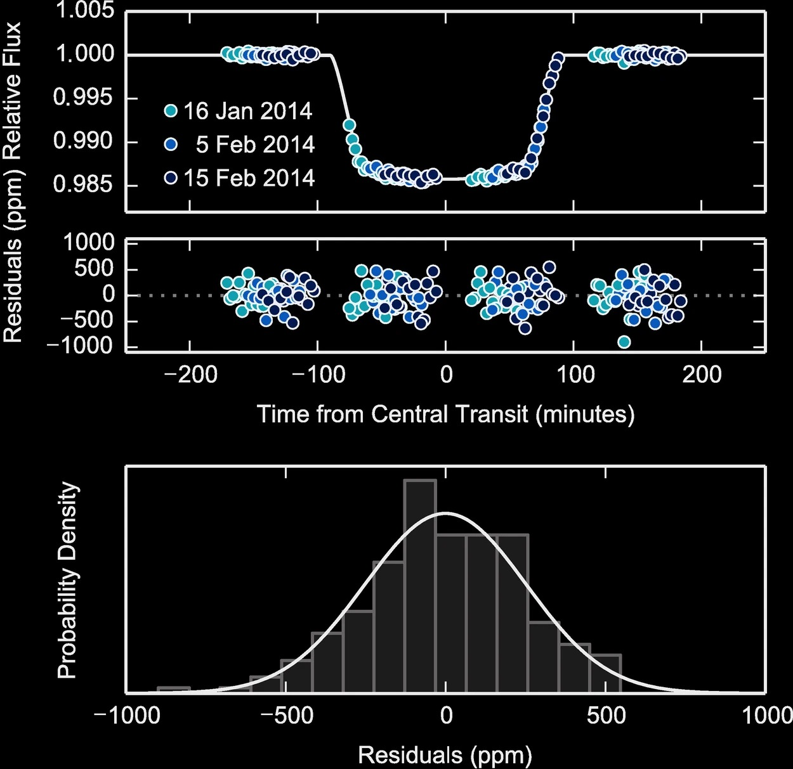
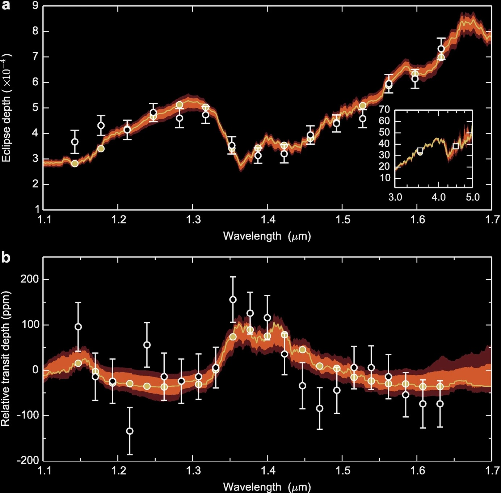
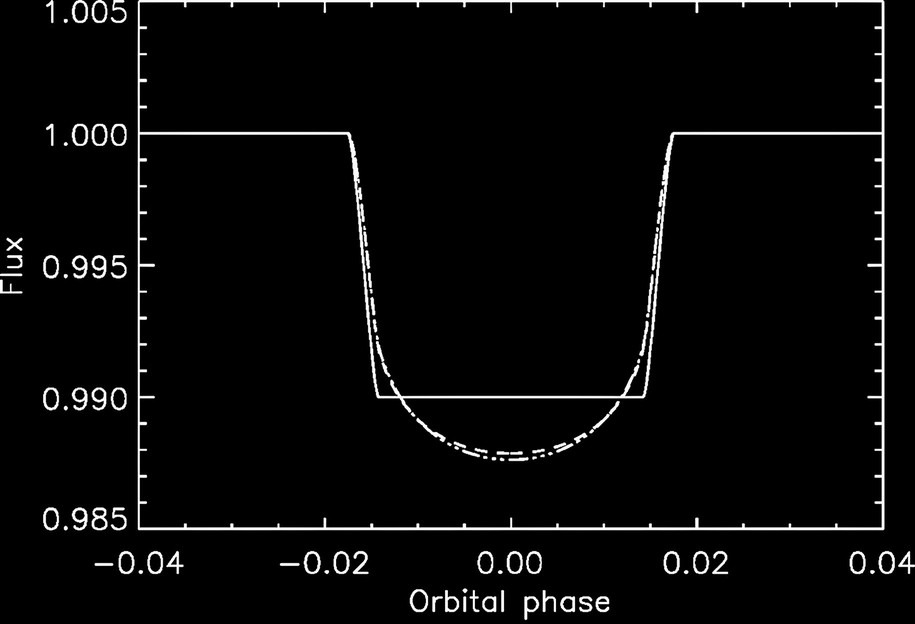
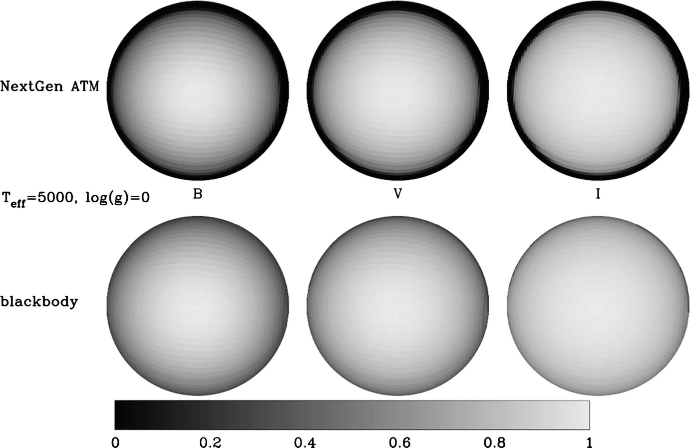

Exoplanet Transits, Transmission Spectroscopy, and Limb Darkening#
Monday, Feb. 10, 2025
astrophysics of stars and planets - spring 2025 - university of arizona, steward observatory
Today’s Agenda#
Announcements (2m)
Reading Overview/Key Points (10m)
In-Class Activity 9 (20m)
Debrief/Reminders (2m)
Exoplanets, Brown Dwarfs, and Stars#
Stars - Undergo nuclear fusion of hydrogen.
Brown Dwarfs - Not massive enough to fuse H to He, \(M\lesssim0.085M_{\odot}\). Recall that H burning takes place at \(T\approx10^{7} (\rm{K})\). So despite no H fusion, Deuterium (\(^{2}\rm{H}\) or \(^{2}\rm{D}\)) can burn at lower temperatures of \(T\approx10^{6} (\rm{K})\).
Planets No \(^{1}\rm{H}\) or \(^{2}\rm{H}\) fusion and at a mass range of \(M\lesssim0.05M_{\odot}\).

Credit: HKT Fig. 2.4: “Mass Cut” diagram showing the fate of single stars in various mass classes.
Planet Formation#
More details in this Chapter from the Handbook of Exoplanets by Phil Armitage.
Planet formation is described by a bottom up theory which suggests that planetary systems form within largely gaseous protoplanetary disks from initially microscopic solid material. Different physical processes dominate as growth proceeds.
Early Phases (particle sizes of \(s\) of \(\mu\)m to m) - primarily aerodynamic and material physics.
Gravitational forces become increasingly important later on, first between growing planetesimals (\(s \geq \rm{km}\)) and later between protoplanets and gas in the disk (for masses \(M \geq 0.1M_{\oplus}\), where \(M_{\oplus}\) is the mass of the Earth).
Giant planet growth from 3 to 20 + \(M_{\oplus}\) cores is limited initially by the ability of their gaseous envelopes to cool and subsequently by how fast the surrounding disk can supply mass.
Transit Photometry as an Exoplanet Discovery Method#

The fractions by which various detection methods contributed to the accumulated sample of known planets are shown, for years since 1995. At the end of 1995, only five planets were known, three from pulsar timing and two from radial velocities. Between 1996 and 2013, the sample of known planets was dominated by those discovered with radial velocities, while in 2018, 78% of all known planets had been discovered by transits. Based on data from the NASA Exoplanet Archive in Feb. 2018, and using its classification by discovery methods .
‘Timing’ includes planets found by pulsar timing, eclipse timing, or transit timing. Other detection methods (astrometry, orbital brightness variations) generate only a very small contribution that is barely visible at the bottom of the graph, for years following 2010.
As the planet passes in front of the star, itsflux diminishes by a fractional denoted as \(\Delta F\).
Assumpting of negligible flux from the planet and of spherical shapes of the star and planet, \(\Delta F\) is given bythe ratio of the areas of the planet and the star:
Definition 75
\(t_{\rm{T}}\) - total duration of the transit event \(t_{\rm{F}}\) - the time of totality, in which the entire planet disk is in front of the stellar disk,
This allows us to define the impact parameter:
Definition 76
where we have \(a\) is the orbital semimajor axis, \(i\) the orbital inclination, and \(P\) the orbital period.
This also allows us to define the scale of the system or the ratio between the semimajor axis and the radius of the star,
Definition 77
combining with Kepler’s laws allows us to make an estimate of the mean density of the star,
Definition 78

Outline of the transit of an exoplanet, with the main quantities used to describe the orbital configuration, from the observables given in the lower solid curve (the observed light curve) to the model representations from the observer’s point of view (central panel) or other viewpoints (top panels). Note that in the central panel, projected views of a and i are drawn.

Single transit observations of the Hot Jupiter WASP- 4b with one NGTS telescope unit (top) and WASP (bottom). Credit: Wheatley et al. 2018
Transmission Spectroscopy#
For this method, the planet is observed in transit as it passes in front of its host star.
The measurement of total brightness (star plus planet) over time is known as the transit light curve.
During the transit, the planet blocks a small fraction of the stellar flux equal to the sky-projected area of the planet relative to the area of the star.
We refer to this fractional drop in flux as the transit depth, \(\delta\).

Illustration of transit and eclipse geometry. A few key distances are labeled: the planet and stellar radii, \(R_{\rm{planet}}\) and \(R_{\rm{star}}\), the atmospheric scale height \(H\), and the separation of centers in the plane of the sky, \(d\). Credit: Robinson 2017.

Transit light curve measured with the Hubble Space Telescope for the hot Jupiter WASP-12b from Kreidberg et al. 2015.
Method#
The key idea behind transmission spectroscopy is that the planet’s transit depth is wavelength dependent.
At wavelengths where the atmosphere is more opaque due to absorption by atoms or molecules, the planet blocks slightly more stellar flux.
To measure these variations, the light curve is binned in wavelength into spectrophotometric channels, and the light curve from each channel is fit separately with a transit model. The measured transit depths as a function of wavelength constitute the transmission spectrum, so named because the variation arises from the transmission of stellar flux through the planet’s atmosphere.

Figure 3 shows the near-infrared transmission spectrum of the hot Jupiter WASP-43b, which has a strong water absorption feature centered at 1.4 \(\mu\rm{m}\).
Theoretical models of the atmosphere require radiative transfer simulations, but we can make an order of magnitude estimate. First we define the atmospheric scale height, \(H\), as the change in altitude over which the pressure drops by a factor of \(e\). Combining the assumptions of HSE and ideal gas law,
Definition 79
where \(T_{\rm{eq}}\) is the planet’s equilibrium temperature.
The amplitude of spectral features in transmission is then
Definition 80
where \(n\) is the number of scale heights crossed at wavelengths with high opacity (typically around two for cloud-free atmospheres at low spectral resolution; Stevenson 2016). It follows that ideal candidates for transmission spectroscopy have high equilibrium temperatures, small host stars, low surface gravity, and low mean molecular mass composition (hydrogen dominated).
But even for these ideal cases, the amplitude of spectral features is just \(\delta_{\lambda} ∼ 0.1\%\). For Earthlike planets, the expected amplitude is two to three orders of magnitude smaller, depending on host star size.
Limb Darkening#
Stars are not uniformly illuminated light sources. The surface brightness distribution of is modified by dark stellar spots, bright faculae, plages, flares, and the continuous presence of the stellar atmosphere. In dwarf stars this means that we see apparently darker regions to the apparent limb than in the apparent center of the star.
The result will be an introduced curvature to the transit light curve and can also modify the transit depth up to 50%.

Transits of the same exoplanet around the same star, only the limb darkening treatmenthas been changed. All curves show the transit of a planet whose diameter is 10% of the star,and all parameters were the same except the limb darkening coefficients. All transit light curveswere produced with the same temperature, metallicity, logg, and microturbulent velocity and for the same Kepler photometric passband.
There are many models and parameters for limb darkening models that require comparison to observations.

Image from Orosz and Hauschildt (2000). Intensity maps of a spherical star at 5000 K effective temperature and for log \(g\) = 0.0. Top images show intensities for NextGen stellaratmosphere models in Johnson B, V, and I; bottom images are monochromatic blackbodies.
In-Class Assignment#
In-Class Assignment 9 is here.